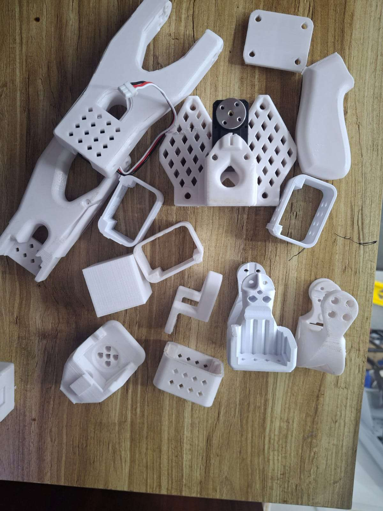
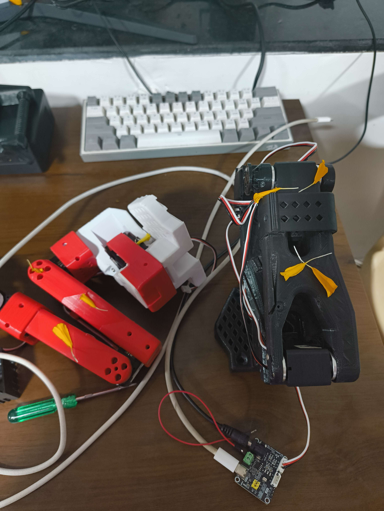

Robot learning
Robot learning in its first form is not about scaling a model. It's rather about if the robot really learns to retry when it fails. May these be the emergent representations or the robustness of the model, this is the best part of working with robots.
We used supervised imitation learning to train a 3D-printed  
The Setting
Calibrating the Arm
The SO100 arm isn't an industrial manipulator. It's a 3D-printed PLA design, powered by STS3215 servos, and controlled via a Waveshare motor driver.
Both the leader and follower setups were calibrated using LeRobot's standard teleop calibration routine: move follower arm to middle of its range of motion; sweep all joints to their min and max (except wrist roll); repeat for the leader arm. LeRobot saves these calibration points into a Hugging Face cache path so every future session starts from a known geometry.
This calibration step anchors the dataset. Without it, no amount of training can save you.
Collecting Data: boring
For data, the setup was minimal, with a Lenovo webcam positioned in front of the arm, framing the entire workspace: the arm, the wheel, the cardboard box, and enough of the table to give spatial context. Plain white background, normal room lighting. RGB only, plus proprioception data from LeRobot (joint angles, torques, etc.).
Each episode lasted around one minute, performing the full “pick-and-place then home” sequence. Around 50 episodes were recorded, and consistency mattered: the wheel, box, and arm were all marked with markers to preserve relative alignment.
The dataset was then pushed directly to Hugging Face using LeRobot's automatic data pipeline, with no extra scripts or manual cleanup.
Training ACT: Learning to Imitate
With the dataset live, the ACT model was trained locally on an RTX 4090. No pretraining. Just data, patience, and GPU hours.
Deployment and the not so subtle Signs of Learning
Deployment was straightforward. The model was cloned locally, run via LeRobot's evaluation script, and deployed through the Feetech SDK at 30 Hz inference, sending servo commands to the follower arm in real time.
At first, movements were hesitant, very jittery. Then, the signs of learning appeared: retries when it failed to grasp, with slight repositioning and reattempts; temporal awareness, with a smooth return to home after completion; transfer through context, as reintroducing the wheel after a rollout triggered the same learned behavior without retraining.
Imitation learning isn't just copying. The model internalized cause and effect through supervised data alone.